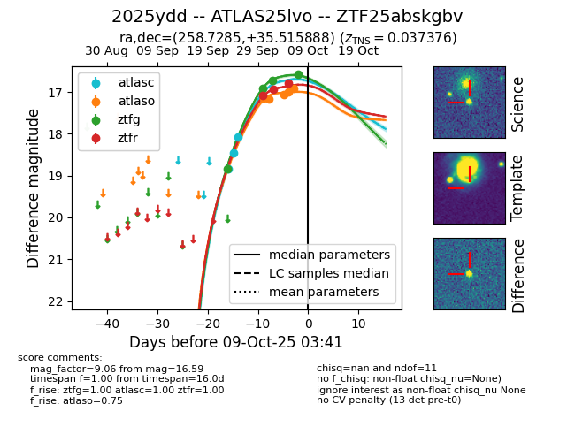
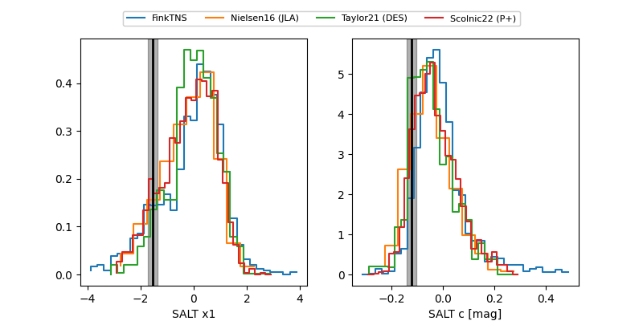

FINK: ZTF25abskgbv
Lasair: ZTF25abskgbv
ALeRCE: ZTF25abskgbv
TNS: 2025ydd
YSE: 2025ydd
ZTF25abskgbv (ztf,fink)
2025ydd (tns,yse)
ATLAS25lvo (atlas)
equatorial (ra, dec) = (258.7285,+35.51589)
galactic (l, b) = (59.1176,+34.12848)


last atlasc=18.08, atlaso=16.91, ztfg=16.59, ztfr=16.79
3 atlasc, 5 atlaso, 4 ztfg, 3 ztfr detections